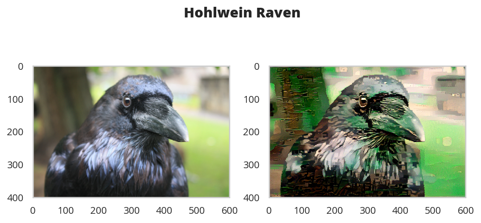

Style Transfer
Table of Contents
Introduction
In this notebook, we’ll recreate a style transfer method that is outlined in the paper, Image Style Transfer Using Convolutional Neural Networks, by Gatys in PyTorch.
In this paper, style transfer uses the features found in the 19-layer VGG Network, which is comprised of a series of convolutional and pooling layers, and a few fully-connected layers. In the image below, the convolutional layers are named by stack and their order in the stack. Conv_1_1 is the first convolutional layer that an image is passed through, in the first stack. Conv_2_1 is the first convolutional layer in the second stack. The deepest convolutional layer in the network is conv_5_4.
Separating Style and Content
Style transfer relies on separating the content and style of an image. Given one content image and one style image, we aim to create a new, target image which should contain our desired content and style components:
- objects and their arrangement are similar to that of the content image
- style, colors, and textures are similar to that of the style image
In this notebook, we'll use a pre-trained VGG19 Net to extract content or style features from a passed in image. We'll then formalize the idea of content and style losses and use those to iteratively update our target image until we get a result that we want. You are encouraged to use a style and content image of your own and share your work on Twitter with @udacity; we'd love to see what you come up with!
Set Up
Imports
Python Standard Library
from datetime import datetime
import pathlib
from typing import Union
From PyPi
start = datetime.now()
from dotenv import load_dotenv
from PIL import Image
import matplotlib.pyplot as pyplot
import numpy
import seaborn
import torch
import torch.optim as optim
import torch.nn.functional as F
from torchvision import transforms, models
print("Elapsed: {}".format(datetime.now() - start))
Elapsed: 0:00:03.711236
This Project
from neurotic.tangles.data_paths import DataPathTwo
Plotting
get_ipython().run_line_magic('matplotlib', 'inline')
get_ipython().run_line_magic('config', "InlineBackend.figure_format = 'retina'")
seaborn.set(style="whitegrid",
rc={"axes.grid": False,
"font.family": ["sans-serif"],
"font.sans-serif": ["Open Sans", "Latin Modern Sans", "Lato"],
"font.size": 12,
"xtick.labelsize": 10,
"ytick.labelsize": 10,
"axes.titlesize": 12,
"figure.figsize": (8, 6),
},
font_scale=3)
Typing
PathType = Union[pathlib.Path, str]
The VGG 19 Network
Load in VGG19 (features)
VGG19 is split into two portions:
vgg19.features, which are all the convolutional and pooling layersvgg19.classifier, which are the three linear, classifier layers at the end
We only need the features portion, which we're going to load in and "freeze" the weights of, below.
Get the "features" portion of VGG19 (we will not need the "classifier" portion).
/home/brunhilde/.virtualenvs/In-Too-Deep/bin/python3: No module named virtualfishstart = datetime.now()
vgg = models.vgg19(pretrained=True).features
print("Elapsed: {}".format(datetime.now() - start))
Elapsed: 0:00:03.197737
Freeze all VGG parameters since we're only optimizing the target image.
/home/brunhilde/.virtualenvs/In-Too-Deep/bin/python3: No module named virtualfishfor param in vgg.parameters():
param.requires_grad_(False)
move the model to GPU, if available
/home/brunhilde/.virtualenvs/In-Too-Deep/bin/python3: No module named virtualfishstart = datetime.now()
device = torch.device("cuda" if torch.cuda.is_available() else "cpu")
vgg.to(device)
print("Using: {}".format(device))
print("Elapsed: {}".format(datetime.now() - start))
Using: cuda Elapsed: 0:00:04.951571
Load in Content and Style Images
You can load in any images you want! Below, we've provided a helper function for loading in any type and size of image. The load_image function also converts images to normalized Tensors.
Additionally, it will be easier to have smaller images and to squish the content and style images so that they are of the same size.
/home/brunhilde/.virtualenvs/In-Too-Deep/bin/python3: No module named virtualfishdef load_image(img_path: PathType, max_size: int=400, shape=None):
''' Load in and transform an image, making sure the image
is <= max_size pixels in the x-y dims.'''
image = Image.open(img_path).convert('RGB')
# large images will slow down processing
if max(image.size) > max_size:
size = max_size
else:
size = max(image.size)
if shape is not None:
size = shape
in_transform = transforms.Compose([
transforms.Resize(size),
transforms.ToTensor(),
transforms.Normalize((0.485, 0.456, 0.406),
(0.229, 0.224, 0.225))])
# discard the transparent, alpha channel (that's the :3) and add the batch dimension
image = in_transform(image)[:3,:,:].unsqueeze(0)
return image
Next, I'm loading in images by file name and forcing the style image to be the same size as the content image.
Load in content and style image.
/home/brunhilde/.virtualenvs/In-Too-Deep/bin/python3: No module named virtualfishload_dotenv()
max_size = 400 if torch.cuda.is_available() else 128
path = DataPathTwo(folder_key="IMAGES", filename_key="RAVEN")
content = load_image(path.from_folder, max_size=max_size).to(device)
Resize style to match content, makes code easier
/home/brunhilde/.virtualenvs/In-Too-Deep/bin/python3: No module named virtualfishstyle_path = DataPathTwo(filename_key="VERMEER", folder_key="IMAGES")
style = load_image(style_path.from_folder, shape=content.shape[-2:]).to(device)
A helper function for un-normalizing an image and converting it from a Tensor image to a NumPy image for display.
/home/brunhilde/.virtualenvs/In-Too-Deep/bin/python3: No module named virtualfishdef im_convert(tensor: torch.Tensor) -> numpy.ndarray:
""" Display a tensor as an image.
Args:
tensor: tensor with image
Returns:
numpy image from tensor
"""
image = tensor.to("cpu").clone().detach()
image = image.numpy().squeeze()
image = image.transpose(1,2,0)
image = image * numpy.array((0.229, 0.224, 0.225)) + numpy.array((0.485, 0.456, 0.406))
image = image.clip(0, 1)
return image
Display the images.
/home/brunhilde/.virtualenvs/In-Too-Deep/bin/python3: No module named virtualfishfigure, (ax1, ax2) = pyplot.subplots(1, 2)
figure.suptitle("Content and Style Images Side-By-Side", weight="bold", y=0.75)
ax1.set_title("Raven (content)")
ax2.set_title("Girl With a Pearl Earring (style)")
ax1.imshow(im_convert(content))
image = ax2.imshow(im_convert(style))

VGG19 Layers
To get the content and style representations of an image, we have to pass an image forward through the VGG19 network until we get to the desired layer(s) and then get the output from that layer.
Print out VGG19 structure so you can see the names of various layers.
/home/brunhilde/.virtualenvs/In-Too-Deep/bin/python3: No module named virtualfishprint(vgg)
Sequential( (0): Conv2d(3, 64, kernel_size=(3, 3), stride=(1, 1), padding=(1, 1)) (1): ReLU(inplace) (2): Conv2d(64, 64, kernel_size=(3, 3), stride=(1, 1), padding=(1, 1)) (3): ReLU(inplace) (4): MaxPool2d(kernel_size=2, stride=2, padding=0, dilation=1, ceil_mode=False) (5): Conv2d(64, 128, kernel_size=(3, 3), stride=(1, 1), padding=(1, 1)) (6): ReLU(inplace) (7): Conv2d(128, 128, kernel_size=(3, 3), stride=(1, 1), padding=(1, 1)) (8): ReLU(inplace) (9): MaxPool2d(kernel_size=2, stride=2, padding=0, dilation=1, ceil_mode=False) (10): Conv2d(128, 256, kernel_size=(3, 3), stride=(1, 1), padding=(1, 1)) (11): ReLU(inplace) (12): Conv2d(256, 256, kernel_size=(3, 3), stride=(1, 1), padding=(1, 1)) (13): ReLU(inplace) (14): Conv2d(256, 256, kernel_size=(3, 3), stride=(1, 1), padding=(1, 1)) (15): ReLU(inplace) (16): Conv2d(256, 256, kernel_size=(3, 3), stride=(1, 1), padding=(1, 1)) (17): ReLU(inplace) (18): MaxPool2d(kernel_size=2, stride=2, padding=0, dilation=1, ceil_mode=False) (19): Conv2d(256, 512, kernel_size=(3, 3), stride=(1, 1), padding=(1, 1)) (20): ReLU(inplace) (21): Conv2d(512, 512, kernel_size=(3, 3), stride=(1, 1), padding=(1, 1)) (22): ReLU(inplace) (23): Conv2d(512, 512, kernel_size=(3, 3), stride=(1, 1), padding=(1, 1)) (24): ReLU(inplace) (25): Conv2d(512, 512, kernel_size=(3, 3), stride=(1, 1), padding=(1, 1)) (26): ReLU(inplace) (27): MaxPool2d(kernel_size=2, stride=2, padding=0, dilation=1, ceil_mode=False) (28): Conv2d(512, 512, kernel_size=(3, 3), stride=(1, 1), padding=(1, 1)) (29): ReLU(inplace) (30): Conv2d(512, 512, kernel_size=(3, 3), stride=(1, 1), padding=(1, 1)) (31): ReLU(inplace) (32): Conv2d(512, 512, kernel_size=(3, 3), stride=(1, 1), padding=(1, 1)) (33): ReLU(inplace) (34): Conv2d(512, 512, kernel_size=(3, 3), stride=(1, 1), padding=(1, 1)) (35): ReLU(inplace) (36): MaxPool2d(kernel_size=2, stride=2, padding=0, dilation=1, ceil_mode=False) )
Content and Style Features
def get_features(image, model, layers=None):
""" Run an image forward through a model and get the features for
a set of layers. Default layers are for VGGNet matching Gatys et al (2016)
"""
if layers is None:
layers = {'0': 'conv1_1',
'5': 'conv2_1',
'10': 'conv3_1',
'19': 'conv4_1',
'21': 'conv4_2', ## content representation
'28': 'conv5_1'}
## -- do not need to change the code below this line -- ##
features = {}
x = image
# model._modules is a dictionary holding each module in the model
for name, layer in model._modules.items():
x = layer(x)
if name in layers:
features[layers[name]] = x
return features
Gram Matrix
The output of every convolutional layer is a Tensor with dimensions associated with the batch_size, a depth, d and some height and width (h, w). The Gram matrix of a convolutional layer can be calculated as follows:
- Get the depth, height, and width of a tensor using
batch_size, d, h, w = tensor.size - Reshape that tensor so that the spatial dimensions are flattened
- Calculate the gram matrix by multiplying the reshaped tensor by it's transpose
Note: You can multiply two matrices using torch.mm(matrix1, matrix2).
def gram_matrix(tensor: torch.Tensor) -> torch.Tensor:
""" Calculate the Gram Matrix of a given tensor
Gram Matrix: https://en.wikipedia.org/wiki/Gramian_matrix
"""
batch_size, depth, height, width = tensor.size()
tensor = tensor.view(batch_size * depth, height * width)
gram = torch.mm(tensor, tensor.t())
return gram
Putting it all Together
Now that we've written functions for extracting features and computing the gram matrix of a given convolutional layer; let's put all these pieces together! We'll extract our features from our images and calculate the gram matrices for each layer in our style representation.
Get content and style features only once before forming the target image.
/home/brunhilde/.virtualenvs/In-Too-Deep/bin/python3: No module named virtualfishcontent_features = get_features(content, vgg)
style_features = get_features(style, vgg)
calculate the gram matrices for each layer of our style representation
/home/brunhilde/.virtualenvs/In-Too-Deep/bin/python3: No module named virtualfishstyle_grams = {layer: gram_matrix(style_features[layer]) for layer in style_features}
Create a third "target" image and prep it for change. It is a good idea to start off with the target as a copy of our content image then iteratively change its style.
/home/brunhilde/.virtualenvs/In-Too-Deep/bin/python3: No module named virtualfishtarget = content.clone().requires_grad_(True).to(device)
Loss and Weights
Individual Layer Style Weights
Below, you are given the option to weight the style representation at each relevant layer. It's suggested that you use a range between 0-1 to weight these layers. By weighting earlier layers (conv1_1 and conv2_1) more, you can expect to get larger style artifacts in your resulting, target image. Should you choose to weight later layers, you'll get more emphasis on smaller features. This is because each layer is a different size and together they create a multi-scale style representation!
Content and Style Weight
Just like in the paper, we define an alpha (content_weight) and a beta (style_weight). This ratio will affect how stylized your final image is. It's recommended that you leave the content_weight = 1 and set the style_weight to achieve the ratio you want.
Weights For Each Style Layer
Weighting earlier layers more will result in larger style artifacts. Notice we are excluding conv4_2 our content representation.
style_weights = {'conv1_1': 1.,
'conv2_1': 0.8,
'conv3_1': 0.6,
'conv4_1': 0.4,
'conv5_1': 0.2}
content_weight = 1 # alpha
style_weight = 1e6 # beta
Updating the Target & Calculating Losses
You'll decide on a number of steps for which to update your image, this is similar to the training loop that you've seen before, only we are changing our target image and nothing else about VGG19 or any other image. Therefore, the number of steps is really up to you to set! I recommend using at least 2000 steps for good results. But, you may want to start out with fewer steps if you are just testing out different weight values or experimenting with different images.
Inside the iteration loop, you'll calculate the content and style losses and update your target image, accordingly.
Content Loss
The content loss will be the mean squared difference between the target and content features at layer conv4_2. This can be calculated as follows:
content_loss = torch.mean((target_features['conv4_2'] - content_features['conv4_2'])**2)
Style Loss
The style loss is calculated in a similar way, only you have to iterate through a number of layers, specified by name in our dictionary style_weights.
- You'll calculate the gram matrix for the target image,
target_gramand style imagestyle_gramat each of these layers and compare those gram matrices, calculating thelayer_style_loss. - Later, you'll see that this value is normalized by the size of the layer.
Total Loss
Finally, you'll create the total loss by adding up the style and content losses and weighting them with your specified alpha and beta!
Intermittently, we'll print out this loss; don't be alarmed if the loss is very large. It takes some time for an image's style to change and you should focus on the appearance of your target image rather than any loss value. Still, you should see that this loss decreases over some number of iterations.
/home/brunhilde/.virtualenvs/In-Too-Deep/bin/python3: No module named virtualfishshow_every = 400
# iteration hyperparameters
optimizer = optim.Adam([target], lr=0.003)
steps = 2000 # decide how many iterations to update your image (5000)
CONTENT_LAYER = "conv4_2"
start = datetime.now()
for repetition in range(1, steps+1):
target_features = get_features(target, vgg)
content_loss = F.mse_loss(target_features[CONTENT_LAYER],
content_features[CONTENT_LAYER])
# the style loss
# initialize the style loss to 0
style_loss = 0
# iterate through each style layer and add to the style loss
for layer in style_weights:
# get the "target" style representation for the layer
target_feature = target_features[layer]
_, d, h, w = target_feature.shape
target_gram = gram_matrix(target_feature)
style_gram = style_grams[layer]
layer_style_loss = style_weights[layer] * F.mse_loss(target_gram,
style_gram)
# add to the style loss
style_loss += layer_style_loss / (d * h * w)
total_loss = content_weight * content_loss + style_weight * style_loss
## -- do not need to change code, below -- ##
# update your target image
optimizer.zero_grad()
total_loss.backward()
optimizer.step()
# display intermediate images and print the loss
if repetition % show_every == 0:
print('({}) Total loss: {}'.format(repetition, total_loss.item()))
#plt.imshow(im_convert(target))
#plt.show()
print("Elapsed: {}".format(datetime.now() - start))
(400) Total loss: 26489776.0 (800) Total loss: 12765434.0 (1200) Total loss: 8439541.0 (1600) Total loss: 6268045.0 (2000) Total loss: 4820489.5 Elapsed: 0:08:03.885520
Display the Target Image
figure, (ax1, ax2) = pyplot.subplots(1, 2)
figure.suptitle("Vermeer Raven", weight="bold", y=0.75)
ax1.imshow(im_convert(content))
image = ax2.imshow(im_convert(target))

A Holhwein Transfer
max_size = 400 if torch.cuda.is_available() else 128
path = DataPathTwo(folder_key="IMAGES", filename_key="RAVEN")
content = load_image(path.from_folder, max_size=max_size).to(device)
style_path = DataPathTwo(filename_key="HOHLWEIN", folder_key="IMAGES")
style = load_image(style_path.from_folder, shape=content.shape[-2:]).to(device)
content_features = get_features(content, vgg)
target = content.clone().requires_grad_(True).to(device)
content_loss = torch.mean((target_features['conv4_2'] - content_features['conv4_2'])**2)
style_features = get_features(style, vgg)
style_grams = {layer: gram_matrix(style_features[layer]) for layer in style_features}
show_every = 400
vgg = models.vgg19(pretrained=True).features
for param in vgg.parameters():
param.requires_grad_(False)
device = torch.device("cuda" if torch.cuda.is_available() else "cpu")
vgg.to(device)
# iteration hyperparameters
optimizer = optim.Adam([target], lr=0.003)
steps = 2000 # decide how many iterations to update your image (5000)
CONTENT_LAYER = "conv4_2"
start = datetime.now()
for repetition in range(1, steps+1):
target_features = get_features(target, vgg)
content_loss = F.mse_loss(target_features[CONTENT_LAYER],
content_features[CONTENT_LAYER])
# the style loss
# initialize the style loss to 0
style_loss = 0
# iterate through each style layer and add to the style loss
for layer in style_weights:
# get the "target" style representation for the layer
target_feature = target_features[layer]
_, d, h, w = target_feature.shape
target_gram = gram_matrix(target_feature)
style_gram = style_grams[layer]
layer_style_loss = style_weights[layer] * F.mse_loss(target_gram,
style_gram)
# add to the style loss
style_loss += layer_style_loss / (d * h * w)
total_loss = content_weight * content_loss + style_weight * style_loss
## -- do not need to change code, below -- ##
# update your target image
optimizer.zero_grad()
total_loss.backward()
optimizer.step()
# display intermediate images and print the loss
if repetition % show_every == 0:
print('({}) Total loss: {}'.format(repetition, total_loss.item()))
print("Elapsed: {}".format(datetime.now() - start))
(400) Total loss: 38191616.0 (800) Total loss: 19276114.0 (1200) Total loss: 12646590.0 (1600) Total loss: 9095670.0 (2000) Total loss: 6934397.0 Elapsed: 0:08:09.517655/home/brunhilde/.virtualenvs/In-Too-Deep/bin/python3: No module named virtualfish
figure, (ax1, ax2) = pyplot.subplots(1, 2)
figure.suptitle("Hohlwein Raven", weight="bold", y=.8)
ax1.imshow(im_convert(content))
image = ax2.imshow(im_convert(target))
